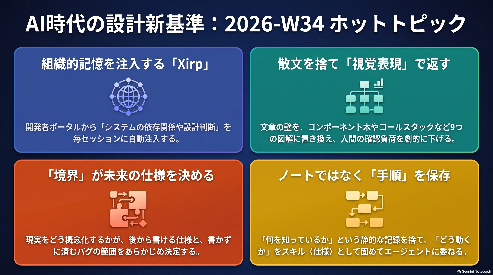
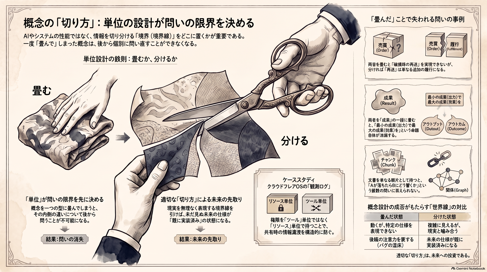

Weekly Insights: 2026-W34（2026-08-17〜08-23）
今週のホットトピック

- xirp Spotifyのエージェント開発環境が外部ベータへ — 「AIエージェントが誤るのは知識が無いからでなく取り出せないから」と同社は問題を立て直し、サービスの所有者・依存関係・設計判断を毎セッションの初期文脈に載せる。
- show-me エージェントの応答を9つの視覚表現で返させる — HumanLayer創業者のDex Horthyが、散文の壁を型シグネチャ・コールスタック・コンポーネント木へ置き換えるAgent Skillとして公開した。
- concept-design 概念設計——何を置いたかが、後から書ける仕様を決める — Zennのtakeshi_teshimaが、同じ仕様を満たす2つの実装の運命を分けるのは実装力でなく「システムの中に何という概念を置いたか」だと論じる。
- workflow-cloning ノートでなく手順を保存して自分を複製する — @milesdeutscherは、第二の脳が壊れるのは人間の手入れを前提にしているからだとし、知識でなく作業手順を仕様とスキルに固める5工程を示す。
深掘り
xirp Spotifyのエージェント開発環境が外部ベータへ Spotifyの言い分で効くのは製品説明より問題の立て方です。エージェントは「技術的には正しいが運用上は誤った判断」を高速かつ自信満々に下すが、直すのに必要な知識は誰も見つけられないSlackスレッドと2021年にそのサービスを作った3人の頭の中に既にあった——だからこれはドキュメントの問題でなく取り出しの問題だ、と切る。打ち手は文脈の調達元を「編集中のファイル」から「そのファイルが属するシステム」へ移すことで、開発者ポータルPortalからサービスの所有者・依存・アーキテクチャ決定を毎セッションに注入します。ただし2026-08時点ではベータ登録の導線のみで、1,300名超の社内利用も「Spotifyで実戦検証済み」も同社の自己申告であり、外部の裏付けはソースの範囲にありません。
show-me エージェントの応答を9つの視覚表現で返させる Dex Horthyの観察は、モデルは指標の上では賢くなったのに読める度合いではむしろ悪くなった、というものです。彼の解はエージェントに言い直させることでなく出力のモードごと変えることで、component tree・call stack・型シグネチャ・file layout など9形式を用意し、いちばん効くのはコードを書き始める前に「コードの形」を合意する設計フェーズだと述べます。今週の素材の中でこれが際立つのは、視覚化を見栄えの話でなく人間の注意力の配分の話として扱っている点で、生成量が増えるほど確認が詰まるという development-as-agriculture の構図に対する具体的な打ち手になっています。
concept-design 概念設計——何を置いたかが、後から書ける仕様を決める
takeshi_teshimaのECサイトの例は、注文明細に配送状態まで持たせた世界線と、売買（Order）と履行（Fulfillment）を別概念に切った世界線を並べます。後者では破損時の再送も分割発送も、コードを一行も変えずに表現できる。理由づけが鋭くて、人が思いつく仕様はその人が現実をどう認識しているかの範囲内で自然なものになるので、概念が現実の捉え方と噛み合っていれば未来の仕様が既に実装済みになるのはむしろ当然だ、と説明します。もう一つの効果は、交換品が「購入ではないもの」としてOrderの外に出るため、SELECT SUM(quantity) のようなごく自然なクエリが間違えなくなること——正しさを後続コードを書く人の注意力に委ねなくてよくなる点です。
workflow-cloning ノートでなく手順を保存して自分を複製する @milesdeutscherの前提は身も蓋もありません。Obsidianはノートを追加するのをやめた瞬間に、Notionはデータベースを更新するのをやめた瞬間に役に立たなくなる。忙しい人間が更新の担い手である限り、システムは人間より先に止まります。彼の対処は保存対象を「何を知っているか」から「どうやるか」へ移すことで、判定の粒度をワークフローでなく工程に置く点が核心です。自身のスポンサー獲得を7工程に割り、リサーチと連絡先収集は完全に自動化できるが最終交渉と納品はできない、と混在を認めた上で切り分けています。
今週の中心テーマ
今週の素材が揃って突いているのは精度でも能力でもなく「何を1つの単位として持つか」で、その切り方が、あとから問えることと問えないことを先に決めてしまう。

同じ形が層をまたいで4回出てきます。売買と履行を1つの型に畳むと再送を表現できない（concept-design）。文書をチャンクに畳むと「Redisが落ちたら何が壊れるか」に経路で答えられない（context-graph-retrieval）。アウトプットとアウトカムを「成果」の一語に畳むと「少ないアウトプットで多くのアウトカムを」という命題そのものが消える——監訳者の川口恭伸がこれを唯一の後悔として公表しました（output-outcome-impact）。権限をツール単位で持つと「エージェントが実際にどのリソースを観測したか」が分からず、共有経路で漏れる（cloudflare-os）。畳んだ側はどれも動きます。動くのに問えなくなる、というのが共通の症状です。
見落としやすい前提を1つ。単位を細かく切るのは無料ではありません。concept-design は自らKISS/YAGNI違反という反論を扱い、「まず現実を無理なく表現できる概念を置き、その制約の内側で最もシンプルな実装を選ぶ」と順序で整理していますし、agent-command-wrappers が示す判断基準は「再利用の見込み」——同じコマンド列をエージェントが2回組み立てたのを見た時点で切り出す、という実務的な線です。切る基準を持たずに細かくするのは、畳むのと別方向に同じだけ損をします。
なお、2026-W23 で扱った「中間記法」とは軸が違います。あちらはAIに渡すときの書き方（記法）の話で、今週は何と何を別物として持つか（境界）の話です。同じ記法でも境界の切り方は変えられます。
根拠ページ
- xirp（→ 今週のホットトピック#1）
- show-me（→ 今週のホットトピック#2）
- concept-design（→ 今週のホットトピック#3）
- workflow-cloning（→ 今週のホットトピック#4）
- context-graph-retrieval — @0xMorlexによる、検索の単位をチャンクからエンティティと関係へ変え、答えを引用付きの経路として返す9ステップ。3つのゲートは正規化・provenance・経路ランキング
- knowledge-graph-llm — @takanorisuzukiのZenn Book。RAGが抱える5つの弱点（回答のゆらぎ・説明不能・社内知識の欠如ほか）をナレッジグラフで解く入門書。全文無料・約168,608字
- cloudflare-os — Cloudflareが2026-08-05にOSS公開した社内AIプラットフォーム。エージェントが観測したリソースを記録し、共有時に相手の権限を再検証する
- output-outcome-impact — Jeff Patton由来のプロダクト価値の三段。『ユーザーストーリーマッピング』日本語版が訳し分けられなかった経緯を監訳者の川口恭伸が公表
- development-as-agriculture — 深津貴之による、生成コストが下がるほど開発は工芸から大規模農業へ寄るという見立て。生成は課金で増やせるが確認速度は増やせない
- agent-autonomy-levels — @Mahaximus_によるエージェント自律度の4段の梯子。段を上げるのはモデルの乗り換えでなくツール・記憶・ループを1つずつ足すこと
- agent-command-wrappers — 定型操作を数十行のスクリプトに固めて1行で呼ばせる手法。効き目の正体はターン数の削減で、ghラッパーの実測で24%減
- evergreen-notes-claude-md — tokuhiromが64p.orgのCLAUDE.mdで実装する、回答直後に「ノートに残すか」を聞かせる一条。原子性・密度の高いリンク・MOCの6原則
- llm-japanese-style-hooks — @yugen_matuniによる、AIの日本語の癖を500本超のNGルールとグッドパターンでPostToolUse Hookから機械検査する運用
- html-share — minorun365のセルフホスト型HTML共有ツール。Claude Codeの作業報告をスマホから追える形にする。8並列運用が第二の動機
- diagram-design — AIが描く図が「全部よくある箱」になる問題に絞ったリポジトリ。27種類の図をHTML+SVGで出し、対象サイトの色とフォントに寄せる
- ai-chat-deeplink — チャットAIをプロンプト事前入力状態で起動するURLパラメータ。APIもチャットUIも持たずに相談の入口だけ作る導線
- lusion — 3Dインタラクティブ体験の制作スタジオ。Markdown化するとほぼ何も残らないという観察自体が、参照事例のストック方法を規定する
- introvert-networking-strategy — @ysk_motoyamaによる、人脈づくりを「話しかける」から「話しかけてもらう」へ反転させる戦略。消耗しない準備工程に投資する
- 2026-W23 — 中間記法の週。今週の「境界」と軸が違うことの参照先
既存wikiとの接続
- palantir-ontology — 「その世界に何が存在するか」から出発する同じ問いを、1アプリの型設計でなく組織横断の世界モデルとして実装した中間層。今週の中心テーマの企業スケール版にあたる
- eval-loop — 生成→採点→閾値未満を止める品質ゲート。「生成は増やせるが確認速度は増やせない」という今週の構図に対して、確認側を機械化する既存の打ち手
- llm-wiki — このvault自身の単位設計。
sources/wiki/outputsの切り分けと、ページのsources:がページ単位でチャンク単位でないという制約が、今週の議論の適用対象になる
sugeta-san への問い
このvaultで、あなたがいま「問えなくなっている」のはどこですか。
→ 具体的な候補が2つあります。1つは根拠の粒度で、ページの sources: はページ単位のため「この一文の出典はどれか」を辿れません。context-graph-retrieval のステップ06が言う provenance（各エッジが由来チャンクを運ぶ）に相当する層が欠けています。もう1つは wiki/ が知識ページと機械生成物（log.jsonl・tier_log.jsonl・weekly/）の二役を背負っている点で、concept-design の言い方をすれば「知識ではないもの」が知識の置き場に入り込んでいる状態です。どちらも今は動いているので、切るかどうかは「後からどの問いを投げたいか」次第になります。
今週の小アクション（5分）
concept-design の概念テストを1回だけ回す。wiki/weekly/ に置いてあるものを、既存概念の言葉で言い直してみてください——「Weeklyは wiki のページか、それとも wiki を入力として作られた出力（outputs/ 側）か」。どちらで言い直しても不自然さが残らないなら概念は足りていて、片方が明らかに苦しいなら置き場所が間違っています。判断に実装は要りません。
いますぐAIと一緒に（コピペ）
以下をそのまま Claude / Claude Code に貼って、今週の「単位の切り方」を自分のvaultに当ててください。
このリポジトリで「1つの型・1つのフォルダ・1つの記録が二役を背負っている箇所」を探して、
概念設計の観点でレビューしてください。
1. wiki/ 配下のディレクトリとファイル種別を一覧し、それぞれが何を表す概念かを1行で言語化する
2. 同じ場所に「別々の主体が、別々の理由で、別々のタイミングに変更するもの」が同居している箇所を挙げる
3. 各候補について「切ると何が問えるようになるか / 切らないと何が問えないままか」を対で書く
4. 切るコストが見合わないものは、その理由も添えて「切らない」と明示する
判断基準は wiki/concepts/concept-design.md（概念テストと境界の2つの手掛かり）と
wiki/concepts/agent-command-wrappers.md（再利用の見込みで切る基準）を参照してください。
さらに読むべきページ
- agent-autonomy-levels — このvaultのlaunchd ingestとWeekly生成が「レベル4」なのか「起動トリガーがあるだけのレベル3」なのかを判定できる4段の梯子。記憶が壊れる3つの型と共通の対策も実務的
- cloudflare-os — 観測ログという単位を持つと下流の共有制御まで効く、という今週のテーマの最も踏み込んだ実装。@shotovimによる個人利用の月額試算（手動同期なら0円）も併載
- evergreen-notes-claude-md — 「回答直後にノート化を提案させる」一条でノート網が育つtokuhiromの実装。このvaultのQuery操作に無い一手であり、原子性か統合かという粒度判断が今週のテーマと直結する